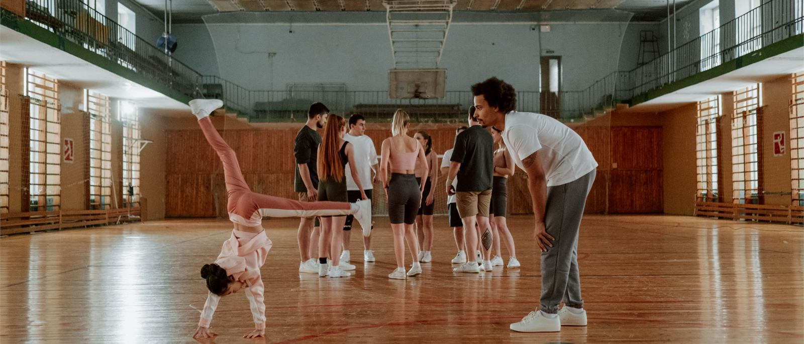

Pakketten en stappen
Reken op een boog van drie jaar rond het lustrum. Het jaar ervoor voorbereiden en oprichten, het lustrumjaar werven en realiseren, het jaar erna verantwoorden en afronden.

Eén traject, drie fasen
Wij begeleiden van begin tot eind. Je kúnt een stichting zelf oprichten, maar de akte is het makkelijke deel — het echte werk zit in de voorwaarden, de administratie en de nette afronding. Dat nemen we over, zodat jullie je met het lustrum kunnen bezighouden.
Elke fase is los af te nemen, maar ze horen bij elkaar: wat in de eerste fase wordt vastgelegd, bepaalt wat in de laatste verantwoord moet worden.
Het jaar vóór het lustrum
Voorbereiding en oprichting
De eerste vraag is niet hóé, maar óf. We zoeken vooraf uit of jullie vereniging kwalificeert, en pas daarna richten we iets op. Zonder deze fase bestaat de steunstichting niet: dit is het fundament waarop de werving straks rust.
Wat wij doen
- de haalbaarheidstoets vooraf en de intake;
- het doel van de investering en het lustrumjaar scherp formuleren, zodat ze in de statuten kunnen worden vastgelegd;
- het oprichtingsbesluit en de conceptstatuten opstellen, en afstemmen met de notaris;
- het bestuursreglement en het eerste bestuursbesluit voorbereiden;
- de inschrijving bij de Kamer van Koophandel verzorgen;
- het bestuur van de steunstichting vormen en voorbereiden op zijn rol;
- een stappenplan en informatiepakket opleveren aan het bestuur van de vereniging.
Wat jullie eraan overhouden
Een notarieel opgerichte stichting die is ingeschreven bij de Kamer van Koophandel, met één helder omschreven doel en een compleet, transparant kader voor bestuur en reglement.
Het lustrumjaar
Begeleiding en organisatie
Dit is het jaar waarin de investering zichtbaar wordt. Het vraagt ritme: een planning waar iedereen op kan bouwen, en tussentijds inzicht voor leden, gevers en bestuur.
Wat wij doen
- een jaarplanning ontwerpen met vaste, overzichtelijke periodes;
- het bestuur van de steunstichting het hele jaar begeleiden;
- de vereniging ondersteunen bij het benaderen van haar eigen leden, oud-leden en lokale ondernemers;
- begeleiding bij de werving en tussentijdse rapportage;
- per periode meekijken op voortgang en zichtbaarheid;
- bewaken dat de besteding binnen de voorwaarden en de termijnen blijft.
Wat jullie eraan overhouden
Een lustrumjaar met een duidelijke planning, begeleiding waar het bestuur die nodig heeft, en een verhaal dat je aan je leden en je gevers kunt uitleggen.
Het jaar ná het lustrum
Afronding en verantwoording
We leggen verantwoording af: een sluitende administratie en een helder verslag, met een dossier voor de vereniging en desgewenst de gemeente. Daarna ontbinden we de stichting netjes, met slotbalans en opheffing. Juist die nette afronding maakt het geloofwaardig richting leden, bonden en gemeente.
Wat wij doen
- het financiële verslag en de verantwoording opstellen;
- de bestuursverantwoording begeleiden;
- de kas- en bankadministratie afronden en de bankrekening sluiten;
- het opheffingsbesluit opstellen;
- de uitschrijving bij de Kamer van Koophandel verzorgen;
- een eventueel batig saldo overdragen aan een ANBI, zoals de regeling voorschrijft;
- advies geven over het archiveren van het dossier.
Wat jullie eraan overhouden
Een investering die verantwoord is tot op de euro, en een stichting die correct is afgesloten in plaats van jarenlang slapend blijft staan.
Wie doet wat
Sommige dingen kan de vereniging beter zelf doen — die vragen om mensen die het dorp en de club kennen. Andere dingen horen bij ons te liggen.
De vereniging zelf
- sponsors benaderen in het eigen lokale netwerk;
- communicatie en social media rond het lustrumjaar;
- de organisatie van evenementen en activiteiten;
- de dagelijkse kasadministratie bijhouden;
- de inhoudelijke keuzes: wat wordt de investering, en waarom.
LustrumMoment
Alles wat juridisch, fiscaal of bestuurlijk risico met zich meebrengt — de oprichting, de fiscale toetsing, de financiële verantwoording en de opheffing — blijft bij ons, ongeacht welke fasen jullie afnemen.
Wij zijn geen notaris of accountant. Voor de notariële akte en waar nodig voor fiscaal advies schakelen we de juiste specialisten in. Zo heb je één aanspreekpunt, met de specialisten op de juiste plek.
Wat het kost
Dat hangt af van de omvang van de vereniging en de investering. Een indicatie en een concreet voorstel krijg je na de kennismaking. Wat wél vaststaat: de bijdragen van gevers gaan volledig naar het doel; onze begeleiding is een aparte afspraak.
Notaris en Kamer van Koophandel
De kosten van de notaris en van de inschrijving bij de Kamer van Koophandel staan los van onze begeleiding. Ze komen voor rekening van de steunstichting zelf en wij rekenen er geen opslag over.
En als er al een stichting is?
Sommige verenigingen hebben van een eerder lustrum nog een stichting staan, vaak slapend. Dan kijken we eerst wat er precies is: klopt de inschrijving nog, wat zeggen de statuten, en wat zou er moeten veranderen.
Of dezelfde stichting bij een volgend lustrum opnieuw kan worden aangemerkt, is niet op voorhand zeker. Ook dat zoeken we vooraf uit, zodat je niet voor verrassingen komt te staan.
Benieuwd of het bij jullie kan?
Een kennismaking is vrijblijvend en kosteloos. We kijken samen of een steunstichting rond jullie lustrum haalbaar is, en wat er nodig zou zijn.